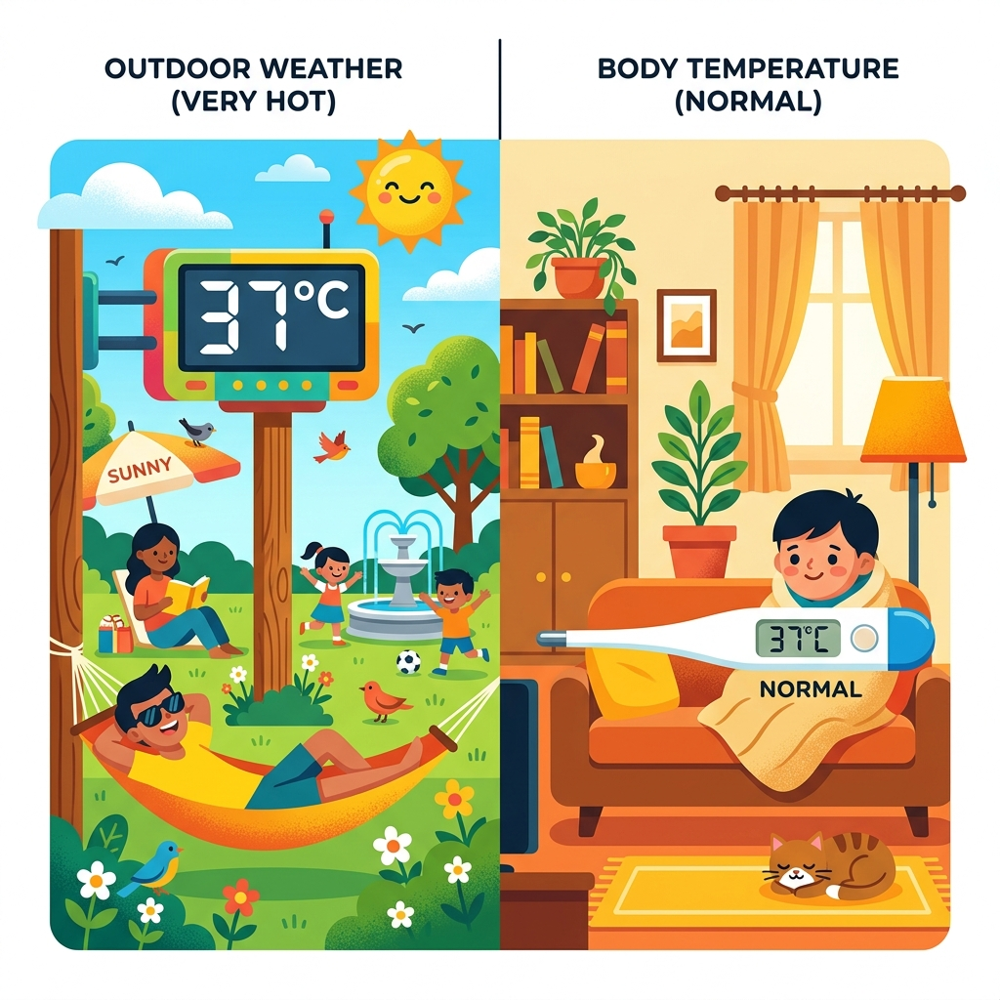

Hiểu được quá trình xử lí thông tin bằng máy tính.
Nắm được các đơn vị đo lượng dữ liệu.
Thấy được ưu điểm vượt trội của thiết bị số.
Hoạt động Khởi động

Chúng ta thu nhận được cùng một dữ liệu là con số 37°C.
Trường hợp 1: Từ một trạm thời tiết ngoài trời.
Trường hợp 2: Từ một chiếc cặp nhiệt độ cơ thể.
🤔 Theo các em, dữ liệu này mang lại "Thông tin" gì trong từng trường hợp?
Hoạt động Khởi động
✅ Trường hợp 1: Thông tin là "Hôm nay trời rất nóng".
✅ Trường hợp 2: Thông tin là "Cơ thể bình thường, không bị sốt".
👉 Cùng một dữ liệu (37°C), nhưng khi đặt trong các ngữ cảnh khác nhau sẽ đem lại cho chúng ta những thông tin khác nhau.
💡 Thông tin và Dữ liệu
Thông tin là gì?
Thông tin là tất cả những gì mang lại cho chúng ta hiểu biết. Thông tin gắn với quá trình nhận thức — máy tính không tự nhận thức được mà chỉ là công cụ hỗ trợ.
Máy tính nhìn thế giới thế nào?
Máy tính không hiểu trực tiếp thế giới tự nhiên.
Mọi âm thanh, hình ảnh, văn bản đều phải được số hoá (biến thành dãy số 0 và 1) để máy tính có thể xử lí được.
Hoạt động 1: Có thể đồng nhất thông tin với dữ liệu không?
🤔 Có các ý kiến sau về dữ liệu của một bài giảng Ngữ Văn:
👧 An
Bài ghi trong vở của em là dữ liệu.
👦 Minh
Tệp bài soạn Word của cô giáo là dữ liệu.
🧑 Khoa
Tệp video ghi lại tiết giảng là dữ liệu.
Theo em bạn nào nói đúng?
Hoạt động 1: Có thể đồng nhất thông tin với dữ liệu không?
✅ Cả 3 bạn đều nói đúng!
👉 Cùng một thông tin (bài giảng môn Ngữ Văn) có thể được thể hiện bằng nhiều loại dữ liệu khác nhau (chữ viết tay, tệp văn bản số, tệp video số).
Dữ liệu là gì?
Trong tin học, dữ liệu là thông tin đã được số hoá (đưa vào máy tính). 👉 Trong máy tính, xử lí thông tin chính là xử lí dữ liệu.
Quá trình xử lí thông tin bằng máy tính
Tương tác: Nhận biết thông tin
🤔 Con người tiếp nhận thông tin từ thế giới bên ngoài qua những giác quan nào?
👀Thị giác Hình ảnh, màu sắc
👂Thính giác Âm thanh
✋Xúc giác, Khứu giác, Vị giác
Máy tính "nhìn" thế giới thế nào?
🤔 Còn máy tính (thiết bị số) "tiếp nhận" thông tin qua đâu?
⌨️ 🖱️ 📷 🎤
👉 Bàn phím, chuột, camera, micro, cảm biến...
Phân biệt Thông tin & Dữ liệu
🧠 Thông tin
Là ý nghĩa, mang lại hiểu biết.
Có tính toàn vẹn: thiếu dữ liệu có thể làm thông tin sai lệch.
Một thông tin có thể được thể hiện bởi nhiều loại dữ liệu.
💾 Dữ liệu
Là yếu tố thể hiện, xác định thông tin.
Độc lập tương đối: một dữ liệu có thể mang nhiều thông tin khác nhau.
Nhiều bộ dữ liệu khác nhau có thể đưa đến cùng một thông tin.
📏 Đơn vị lưu trữ dữ liệu
Bit (binary digit) là đơn vị nhỏ nhất, chỉ nhận giá trị 0 hoặc 1.
Phần lớn máy tính sử dụng byte (8 bit) làm đơn vị đo lượng dữ liệu.
Bảng Đơn vị lưu trữ
Đơn vị
Kí hiệu
Lượng dữ liệu
bit
bit
1 bit
Byte
B
8 bit
Kilobyte
KB
2¹⁰ B = 1 024 B
Megabyte
MB
2¹⁰ KB
Gigabyte
GB
2¹⁰ MB
Terabyte
TB
2¹⁰ GB
Mỗi đơn vị hơn kém nhau 2¹⁰ = 1 024 lần
Mở rộng: KB hay KiB?
Tại sao USB 16GB cắm vào máy tính chỉ còn 14.9GB?
Theo chuẩn quốc tế (IEC), đơn vị Kilo, Mega, Giga là bội số của 1 000 (1 KB = 1 000 B).
Để chỉ bội số của 1 024, người ta dùng chuẩn nhị phân Kibi, Mebi, Gibi (1 KiB = 1 024 B).
Trong các bài tập SGK và thi cử hiện tại, chúng ta vẫn tạm dùng quy ước cũ (KB = 1 024 B).
👉 Thực tế: Nhà sản xuất USB dùng chuẩn 1 000 (USB 16GB = 16 tỉ byte). Nhưng Windows lại chia cho 1 024, nên hệ thống sẽ báo dung lượng là: 16 000 000 000 ÷ (1024³) ≈ 14.9 GiB.
Truyền thông tin: Xưa và Nay
📜 Thư tay (Truyền thống)
Tốn nhiều ngày để chuyển phát, dễ thất lạc, mang được ít dữ liệu (vài tờ giấy).
📧 Thư điện tử (Thiết bị số)
Truyền đi gần như tức thời, đính kèm được nhiều hình ảnh, video (dữ liệu lớn).
Sự thay đổi kì diệu
🤔 Theo các em, điều gì đã tạo ra sự khác biệt khổng lồ này?
👉 Sức mạnh của Thiết bị số
Hoạt động 2: Nhận biết thiết bị số
Trong các thiết bị dưới đây, thiết bị nào là thiết bị số?
⌚ Đồng hồ cơ
🌬️ Quạt điện cơ
📡 Bộ thu phát Wifi
💾 Thẻ nhớ
💻 Máy tính xách tay
Hoạt động 2: Nhận biết thiết bị số
⌚ Đồng hồ cơ (Không phải)
🌬️ Quạt điện cơ (Không phải)
📡 Bộ thu phát Wifi (Là Thiết bị số)
💾 Thẻ nhớ (Là Thiết bị số)
💻 Máy tính xách tay (Là Thiết bị số)
✅ Thiết bị số là các thiết bị làm việc với thông tin số (lưu trữ, truyền dữ liệu, xử lí thông tin số). Đồng hồ cơ và quạt điện cơ không làm việc với thông tin số.
📱 Thiết bị số là gì?
Các thiết bị làm việc với thông tin số (lưu trữ, truyền dữ liệu, xử lí) được gọi là thiết bị số.
Ví dụ: Điện thoại thông minh, máy tính xách tay, đồng hồ thông minh, máy ảnh kĩ thuật số...
Ưu điểm của Thiết bị số
💾
Lưu trữ
Dung lượng khổng lồ trong thiết bị nhỏ gọn, tìm kiếm siêu tốc.
⚡
Xử lí
Tốc độ hàng tỉ phép tính mỗi giây, độ chính xác tuyệt đối.
🌐
Truyền thông
Tốc độ truyền tin lớn (vài chục Mb/s), gần như tức thời.
🎯 Luyện tập
🤔 Câu 1: Phát biểu nào sau đây mô tả đúng mối quan hệ giữa thông tin và dữ liệu?
A. Thông tin là ý nghĩa, dữ liệu là hình thức thể hiện thông tin đó.
B. Dữ liệu là ý nghĩa, thông tin là các con số ghi lại trong máy tính.
C. Thông tin và dữ liệu hoàn toàn đồng nhất.
D. Thông tin chỉ tồn tại bên trong máy tính, dữ liệu chỉ ở ngoài đời.
🎯 Luyện tập
🤔 Câu 1: Phát biểu nào sau đây mô tả đúng mối quan hệ giữa thông tin và dữ liệu?
✅ Đáp án A Thông tin là ý nghĩa mà con người hiểu được; dữ liệu là dạng thể hiện (số hoá) của thông tin để máy tính xử lí.
🎯 Luyện tập
🤔 Câu 2: 1 KB bằng bao nhiêu byte?
A. 1 024 byte (2¹⁰)
B. 1 000 byte (10³)
C. 8 byte (2³)
D. 512 byte (2⁹)
🎯 Luyện tập
🤔 Câu 2: 1 KB bằng bao nhiêu byte?
✅ Đáp án A Theo quy ước trong tin học, 1 KB = 2¹⁰ byte = 1 024 byte. Các bậc tiếp theo (MB, GB, TB) đều nhân 1 024.
🚀 Vận dụng thực tế
Tình huống:
Em có một thẻ nhớ điện thoại với dung lượng 16 GB. Trung bình mỗi bức ảnh chụp bằng điện thoại có dung lượng khoảng 4 MB.
Hỏi thẻ nhớ này có thể lưu trữ được tối đa khoảng bao nhiêu bức ảnh?
🚀 Vận dụng thực tế
Tình huống:
Em có một thẻ nhớ điện thoại với dung lượng 16 GB. Trung bình mỗi bức ảnh chụp bằng điện thoại có dung lượng khoảng 4 MB.
Hỏi thẻ nhớ này có thể lưu trữ được tối đa khoảng bao nhiêu bức ảnh?
✅ Bài giải:
Đổi đơn vị GB ra MB: 16 GB = 16 × 1024 = 16 384 MB.
Số lượng ảnh thẻ nhớ lưu được: 16 384 ÷ 4 = 4 096 (bức ảnh).
🎒 Ghi nhớ nhanh cả bài
Thông tin là ý nghĩa; dữ liệu là dạng thể hiện để máy tính xử lí. Hai khái niệm độc lập tương đối.
Quá trình xử lí: Tiếp nhận → Xử lí → Đưa ra kết quả.
Bit là đơn vị nhỏ nhất. 1 B = 8 bit. Các đơn vị KB, MB, GB, TB hơn kém nhau 1 024 lần.
Thiết bị số có ưu điểm vượt trội về lưu trữ, xử lí và truyền thông tốc độ cao.